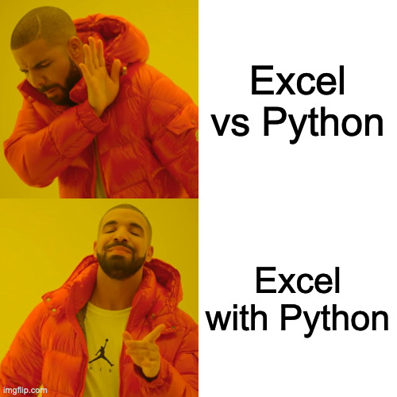

MATH60207 - Lecture 11
Plan for Today
- Team assignment
- Collaboration: Git and GitHub
- Introduction to machine learning
- Introduction to text analysis
- What next?
Team Assignment
- Teams of 1, 2, or 3 (no match-making)
- Final report as a Jupyter Notebook
- Code can be a mix of Python script (
.py) and Jupyter notebook
- Code can be a mix of Python script (
- On GitHub Classroom
- No automated grading (no tests)
git / GitHub: Lecture 1
git
- A free and open source distributed version control system.
- You can think of git as adding “track changes” to your code, better.
GitHub
- A hosted solution for git, plus more.
git : Lecture 11
git
- A free and open source distributed version control system.
- You can think of git as adding “track changes” to your code, better.
- Allows to keep track of multiple working versions of your code.
- Allows multiple people to collaborate on code
git / GitHub : Lecture 11
GitHub
- A hosted solution for git, plus more.
- Provides a nice interface to git features
- Provides a nice set of features for open-source collaboration
- ++ a lot more
How to learn more about GH?
git/GitHub and Jupyter Notebooks
- git works great with text files (i.e. Python code, Markdown, etc.)
Jupyter Notebooks have a lot of metadata that makes them hard to deal with for:
- diffing (looking at differences)
- merging/conflict resolution (deciding which differences to keep)
- Integrated Git tools in VS Code work well with Jupyter notebooks
- Still, watch out for conflicts, can be harder to deal with in Notebooks
What is machine learning?
Machine learning is an application of artificial intelligence (AI) that provides systems the ability to automatically learn and improve from experience without being explicitly programmed. Machine learning focuses on the development of computer programs that can access data and use it to learn for themselves.
Machine learning approaches
- Supervised learning: The computer is presented with example inputs and their desired outputs (think OLS).
- Unsupervised learning: No labels are given to the learning algorithm, leaving it on its own to find structure in its input.
- Reinforcement learning: A computer program interacts with a dynamic environment in which it must perform a certain goal. As it navigates its problem space, the program is provided feedback that’s analogous to rewards, which it tries to maximize.
Why machine learning
- Machine learning is good for forecasting or extracting complex (non-linear) patterns from data.
- Machine learning is not good for statistical inference.
The tools of machine learning
scikit-learn Powerful package that has implementations for most common machine learning algorithms (except deep learning) and many utility functions to help with the process.
Deep learning libraries
- PyTorch (Facebook)
- Keras (built on TensorFlow, Google)
Using recent models in Python
Types of ML tasks
Common ML tasks can be divided in four groups:
- Classification: Identify which category an observation belongs to.
- Regression: Predict a continuous-value.
- Clustering: Automatic grouping of observations.
- Dimensionality reduction: reduce the number of explanatory variables.
Some vocabulary
- training: estimating model parameters and hyperparameters
- hyper-parameters: parameters that go beyond the weights of the models (i.e. depth of a decision tree)
- tuning hyper-parameters: choosing the best ones
- grid search: trying all possible values over a grid
- preprocessing: all the data preparation steps (normalization, etc.)
- score: objective function (i.e. MSE, R^2)
Estimating a model
- Split the sample in three groups: training, validation, and test:
- Put the test set aside until done
- Tune the hyper-parameters:
- Estimate the model on the training set.
- Validate OOS performance on the validation set.
- Optimise parameters by repeating this step.
- Alternative: cross-validation (mix training and validation)
- When satisfied, evaluate the “true” OOS performance on the test set.
Estimating a timeseries model
- In finance, we care about time series properties;
- Optimization can be done using rolling windows.
- Important that the test set is always out-of-sample.
Common regression models
- Linear models (OLS, LASSO, Ridge, ElasticNet):
- {\hat {\beta }}\equiv {\underset {\beta }{\operatorname {argmin} }}(\|y-X\beta \|^{2}+\underbrace{\lambda_{2}\|\beta \|^{2}}_{\text{Ridge}}+\underbrace{\lambda_{1}\|\beta \|_{1}}_{\text{LASSO}})
- Also includes logistic regression, quantile regression, + much more
- Support Vector Machines: finds the vectors (projections, can be nonlinear) that contain the most points from the sample.
- Decision trees: each branch is based on a binary decision (i.e. x_1 > 0.04)
Ensemble methods
We often want to combine more than one model:
- If errors are not perfectly correlated and models are not biased
- This is diversification!
Normalization
Remember, we only care about predicting y, not about inference, so it is common to normalize the X and y before estimating the model to improve numerical performance.
- Whatever transformation is done should be fixed with the training set and the same transformation should be applied to out-of-sample observations.
Book

What is text analysis?
- Text analysis, also referred to as text mining or text data mining, is the process of deriving high-quality information from text.
- Text analysis involves information retrieval, lexical analysis to study word frequency distributions, pattern recognition, tagging/annotation, information extraction, data mining techniques including link and association analysis, visualization, and predictive analytics.
What is text analysis? (continued)
- The overarching goal is, essentially, to turn text into data for analysis, via application of natural language processing (NLP), different types of algorithms and analytical methods. An important phase of this process is the interpretation of the gathered information.
Why text analysis
- A lot of valuable information is available in text format, but not necessarily in a nice structured format.
- Nicely formatted datasets, such as CRSP, Compustat, etc. have been extensively studied, so the bar is high to answer important questions using only those.
- Interesting questions can be answered by those who manage to find the right data.
The tools of text analysis
- NLTK: Natural Language Toolkit. Powerful library implementing many methods for text analysis
- textblob: Simpler package with easier to use interface, built on top of NLTK and pattern.
- Transformers: provides thousands of pretrained models to perform tasks on different modalities such as text, vision, and audio.
- spaCy: library for creating NLP pipelines
- See also OpenAI, Ollama, Langchain listed earlier.
References
For an introduction to text analysis in finance/economics, see:
- “Text as data.” Gentzkow, Kelly, and Taddy (2019)
For more advanced text analysis, see:
- Applied Text Analysis with Python: O’Reilly, free with the library.
- https://www.nltk.org/book/ : Online version of the first edition is the book available via the library, but you’re better off with this up-to-date web version.
What next?
- Browse Youtube:
What next? (2)
- Code, code, code
- Go back to Excel?

Excel with Python
You can read and write Excel files with pandas.
You can also use Excel with Python:
Book (O’Reilly): Python for Excel
Podcasts
For next class
- Read the paper
References

MATH60207